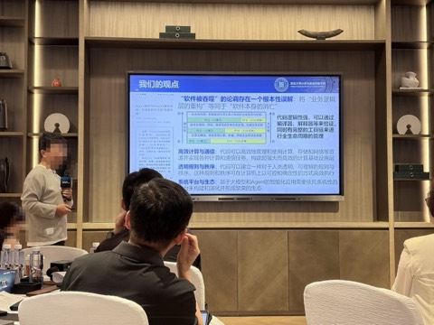
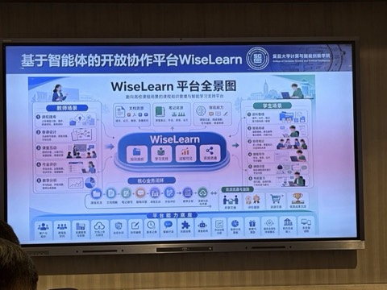
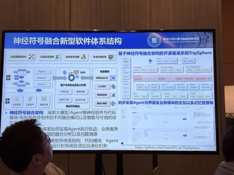

音频围绕智能化软件发展的机遇与挑战展开，探讨了 AI 对软件开发的影响、代码是否会消失以及智能化软件的新形态等内容，同时提出研究应结合实际系统，内容如下：
音频围绕智能软件运维、平台建设以及 AI 对程序员的影响展开讨论，内容如下：
音频主要探讨了软件的复杂性问题以及 AI coding 的发展情况，内容如下：
音频围绕 AI 辅助软件开发展开讨论，分析了 AI 在软件开发中的作用、存在的问题，强调了企业软件研发体系进化、人机协作以及架构设计的重要性，内容如下：


